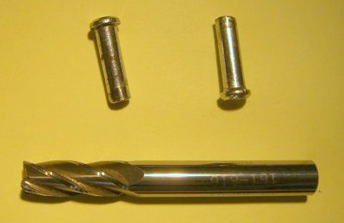

Removing the Gear Lever
The following is from John Boocock on the mg-tabc group on 2nd July 2016.
~~~~~~~~~~
Here is a summary of what I will do on TC7142 as a consequence of the feedbackThanks to all who replied to my call for help in removing my gear lever. With the combined wisdom of the group I got the pins out and for future reference will describe how it was achieved.
- Firstly remove the gearbox lid.
- With an 8mm end mill remove the aluminium peeded over the end of the pins.
- Grind the end of a piece of 4.0 - 4.5mm hardened steel bar to a screwdriver point.
- Apply penetrating oil to the ends of the pins and heat the end of the alumunium gearbox extension with a hot air gun to about 50 - 60 degrees C.
- Wearing a pair of gloves tap the sharpened bar down between the pin and the ball of the gear lever until the pin becomes free.
- As you can see from the picture the head of the pin is mushroom shaped hence the need to remove the peened over aluminium.
- The pins are 5mm diameter with a 7mm diameter head and are 19mm long.
~~~~~~~~~~
Return to Notebook
© David James 2016 Last updated: 4th July 2016